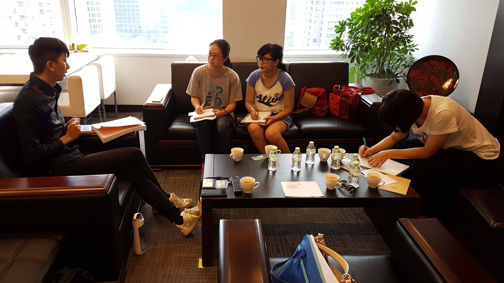

張耀中議員助理林佑宇
在「旱溪排水積善橋至國光橋環境營造工程」的計畫中，議員的職責是負責監督，執行企劃擬好後，議員必須擔負起監工的責任，並且定期檢查工程進度。
整治後的康橋不只附近的住戶會來散步，就連假日也多了許多遊客。輕艇隊的選手使用作為練習處，卻可能會造成與釣客間的小摩擦。在沒有明文規定下，康橋是公用空間，因此輕艇隊的選手必須與附近的釣客共用康橋的資源，卻偶爾會被丟石頭攻擊，也有一些釣客希望能在台中立下一些與河川相關的法條，來規範水上活動。未來對於整治後的康橋，仍是希望能夠淨化水質，並且達到環境綠美化的目的。
推動計畫困難
圖片來源:自行拍攝在推動計畫過程中，最常遇到的大概就是被公家機關以一句「沒錢」帶過。然而，如果現階段真的沒有經費，那也是可以先擬計畫，再去籌集經費。
另一個遇上的阻礙，是地方上的聲音。就如在一個班級中，每個人會有不同的意見一樣，在整治的過程中，執行機關要面對許多人的意見，常常不曉得應該聽誰的才好。有使用者的意見，有地方民眾的聲音，更有民意代表的看法，眾多不同的發言聚集在一起，很容易就會產生爭執，誰也說不出誰的意見才是最好的。在這時，張議員所代表的角色即是，進行協調，將阻礙壓到最小，讓工程能夠順利地進行下去。
整治帶來的改變
 圖片來源:自行拍攝
圖片來源:自行拍攝
以往的康橋並不那麼受人喜愛，整治後因為變乾淨的水質以及綠化的環境，不少的民眾會在飯後來散步，假日也會有遊客來野餐，也能看見三三兩兩的釣客聚在溪邊垂釣，偶爾也會有街頭藝人到場表演。
其實對於議員來說，因為不同選區，這項工程的能帶來的個人利益（選票）其實不高，因此「是否真的要做嗎？」就成為在過程中不可避免的掙扎。不過這個建設完成後，一切都覺得值得！